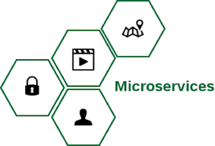
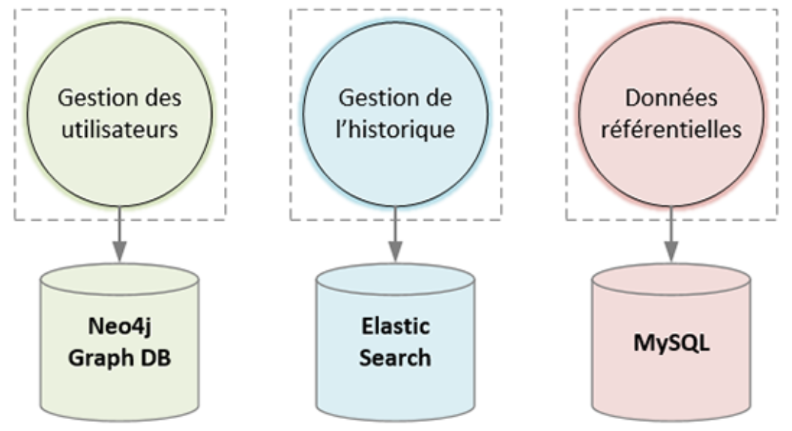
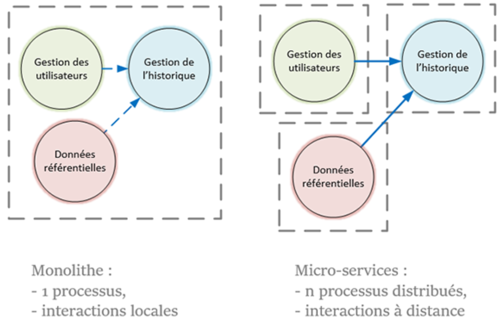

Liste todo



Les micro-services étant indépendants et interopérables, ils ne sont pas contraints à une uniformité technologique.
Les choix technologiques peuvent ainsi être adaptés aux besoins spécifiques de chaque micro-service.
Il est ainsi possible d’utiliser un serveur de bases de données non-relationnel plus performant en écriture et plus extensible pour un micro-service de gestion d’historique.
A compléter

Afin d’atteindre ce niveau de découplage, chaque micro-service doit être un processus système indépendant, isolé sur une machine distincte ou déployé dans un conteneur.
La communication entre les clients et les micro-services, ou entre les micro-services eux-mêmes, est implémentée par des services web ou un protocole d’échanges de messages avec ou sans modèle d’acteurs.